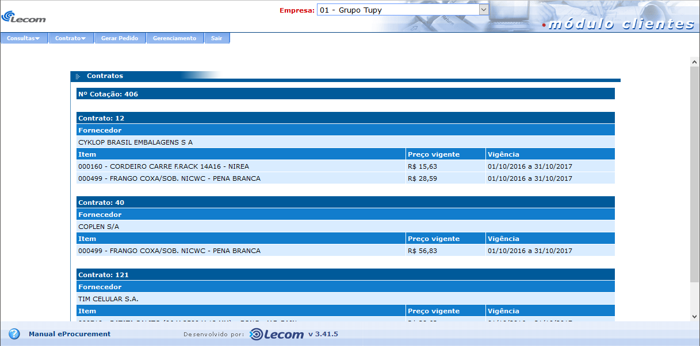

Documentação do Cliente - eProcurement
A função dessa tela é cadastrar um contrato já existente com fornecedor e itens já definidos.
Na primeira parte da tela são definidos os itens pertencentes ao contrato, sendo possível consulta-los e seleciona-los clicando no botão “consulta” e selecionando os itens que pertenceram ao contrato.
Na segunda parte é definido o fornecedor ou os fornecedores que fazem parte do contrato. Para adicionar fornecedores basta efetuar a consulta com ou sem parâmetros basta clicar no botão “consulta”, selecionar os pertencentes ao contrato e clicar no botão “adicionar”. Por fim, deve-se definir o período em que o contrato estará vigente, definindo a data de início e fim de vigência. Após isso, clicando no botão “Gravar”, o contrato será salvo.
Nesta tela, o comprador pode efetuar a consulta de todos os contratos disponíveis. É possível utilizar filtros para refinar a pesquisa a ser feita, como o Nº do contrato a ser buscado, a situação, o fornecedor presente no contrato, data de vigência e período de vencimento. Clicando em “consultar” os resultados serão exibidos
Ao listar os contratos, surgem algumas opções para o usuário comprador junto dos contratos. Clicando sobre o contrato listado, serão apresentados todos os seus dados. Clicando no botão em vermelho, o contrato poderá ser cancelado. E se caso o período de vigência do contrato já esteja vencido, é possível renovar clicando no botão renovar contrato.
Esta tela é disponível clicando no botão “renovar contrato” da tela de consulta de contratos, após os mesmos estarem listados e o seu período de vigência já vencido. Aqui o comprador define a nova data inicial e de termino de vigência do contrato. Na parte de itens, ele poderá manter os mesmos itens presentes no contrato, ou adicionar novos itens. E por fim, adicionar os fornecedores para fazerem parte do contrato. Esses fornecedores farão parte de uma cotação de contrato.
Na tela consulta de cotação de contratos, o comprador poderá consultar todas as cotações geradas a partir de itens presentes na criação de contratos. É possível utilizar filtros para refinar a pesquisa a ser feita, como a cotação, o contrato de origem da cotação, o fornecedor presente no contrato, o item presente em um contrato, intervalo da data de cotação e o intervalo de data de vencimento da cotação. Clicando em “consultar” os resultados serão exibidos.
Ao listar as cotações, surgem algumas opções para o usuário comprador junto das cotações. Clicando sobre a cotação listada, serão apresentados todos os seus dados. Clicando no botão “prorrogar cotações” o comprador poderá estender a data que foi definida para finalizar a cotação. Clicando em “Mapa comparativo”, é exibida uma tela que faz a comparação entre os fornecedores envolvidos na cotação.
Ainda na tela de cotações de contrato, caso um cotação já esteja finalizada, clicando na terceira e última opção “contratos”, o comprador pode consultar o contrato que foi fechado a partir da cotação.
